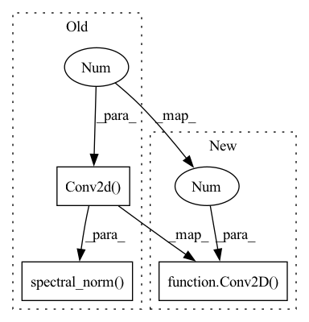

Pattern ID :25011

Before Change
def __init__(self):
super().__init__()
self.conv = Conv2D(4, 64, kernel_size=4, stride=2, bias=True, use_spectrual_norm=False)
self.conv_1 = nn.utils.spectral_norm(nn.Conv2d(64, 128, kernel_size=4, stride=1, bias=True))
self.inst_norm_1 = torch.nn.InstanceNorm2d(128)
self.conv_2 = nn.utils.spectral_norm(nn.Conv2d(128, 256, kernel_size=4, stride=1, bias=True))
self.inst_norm_2 = torch.nn.InstanceNorm2d(256)
After Change
def __init__(self):
super().__init__()
self.conv = Conv2D(4, 64, kernel_size=4, stride=2, bias=True, use_spectrual_norm=False)
self.conv_1 = Conv2D(64, 128, kernel_size=4, stride=1, bias=True, use_spectrual_norm=True)
self.inst_norm_1 = torch.nn.InstanceNorm2d(128)
self.conv_2 = Conv2D(128, 256, kernel_size=4, stride=1, bias=True, use_spectrual_norm=True)
self.inst_norm_2 = torch.nn.InstanceNorm2d(256)
In pattern: SUPERPATTERN
Frequency: 3
Non-data size: 3
Instances
Fragment ID: 76852420
Project Name: yshen47/infinitenature-pytorch
Commit Name: 16bb2145058eada43be9b1cbd74259c23de7521a
Time: 2022-10-05
Author: yshen47@illinois.edu
File Name: modules/discriminator.py
M Class Name: PatchDiscriminator
N Class Name: PatchDiscriminator
M Method Name: __init__(1)
N Method Name: __init__(1)
M Parent Class: nn.Module
N Parent Class: nn.Module
M File Name: modules/discriminator.py
N File Name: modules/discriminator.py
M Start Line: 12
M End Line: 18
N Start Line: 12
N End Line: 18
'>
Before Change
use_spectral_norm=self.args.use_spectral_norm,
in_channel=5)
self.conv = nn.utils.spectral_norm(nn.Conv2d(self.args.num_channel, 4, kernel_size=3, stride=1, bias=True))
def forward(self, rgbd, mask, z):
After Change
use_spectral_norm=self.args.use_spectral_norm,
in_channel=5)
self.conv = Conv2D(self.args.num_channel, 4, kernel_size=3, stride=1, bias=True, use_spectrual_norm=True)
def forward(self, rgbd, mask, z):
'>
Fragment ID: 76852423
Project Name: yshen47/infinitenature-pytorch
Commit Name: 16bb2145058eada43be9b1cbd74259c23de7521a
Time: 2022-10-05
Author: yshen47@illinois.edu
File Name: modules/generator.py
M Class Name: SpadeGenerator
N Class Name: SpadeGenerator
M Method Name: __init__(2)
N Method Name: __init__(2)
M Parent Class: nn.Module
N Parent Class: nn.Module
M File Name: modules/generator.py
N File Name: modules/generator.py
M Start Line: 99
M End Line: 99
N Start Line: 99
N End Line: 99
'>
Before Change
super().__init__()
self.args = args
self.num_channel = num_channel
self.conv_0 = nn.utils.spectral_norm(nn.Conv2d(4, num_channel, kernel_size=3, stride=2, bias=True))
self.inst_norm_0 = torch.nn.InstanceNorm2d(num_channel)
self.conv_1 = nn.utils.spectral_norm(nn.Conv2d(num_channel, 2 * num_channel, kernel_size=3, stride=2, bias=True))
self.inst_norm_1 = torch.nn.InstanceNorm2d(2 * num_channel)
After Change
super().__init__()
self.args = args
self.num_channel = num_channel
self.conv_0 = Conv2D(4, num_channel, kernel_size=3, stride=2, bias=True, use_spectrual_norm=True)
self.inst_norm_0 = torch.nn.InstanceNorm2d(num_channel)
self.conv_1 = Conv2D(num_channel, 2 * num_channel, kernel_size=3, stride=2, bias=True, use_spectrual_norm=True)
self.inst_norm_1 = torch.nn.InstanceNorm2d(2 * num_channel)
'>
Fragment ID: 76852425
Project Name: yshen47/infinitenature-pytorch
Commit Name: 16bb2145058eada43be9b1cbd74259c23de7521a
Time: 2022-10-05
Author: yshen47@illinois.edu
File Name: modules/generator.py
M Class Name: SpadeEncoder
N Class Name: SpadeEncoder
M Method Name: __init__(3)
N Method Name: __init__(3)
M Parent Class: nn.Module
N Parent Class: nn.Module
M File Name: modules/generator.py
N File Name: modules/generator.py
M Start Line: 148
M End Line: 163
N Start Line: 145
N End Line: 161